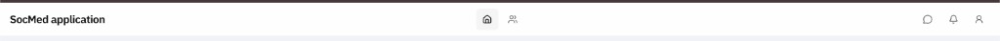

Plan 19 navbar arrangement · Plan 25 ProfileAvatar · existing B&W tokens
Why
Plan 19 fixed navbar structure (full-width three zones, profile dropdown). The chrome still reads as a bare utility strip: plain product title, flat gray icon buttons, generic profile silhouette. Feed cards, profile headers, and modals already use elevation, rounded surfaces, and avatar identity — the navbar is the visual weak link on every page.

Current (before) — functional layout, minimal polish.
What
Visual-only upgrade of AppShell header chrome. No route, API, badge-logic, or layout-zone changes.
Design tokens — frontend/src/index.css: B&W palette, --feed-shadow, .profile-dropdown-menu, .animate-menu-enter, reduced-motion guards. Reuse — do not invent a second shadow/menu system.
Avatar — frontend/src/components/ProfileAvatar.tsx; user fields from AuthContext (displayName, avatarUrl).
Dropdown — frontend/src/components/ui/dropdown-menu.tsx (Radix). Style content with profile-dropdown classes or extend primitive with a variant prop — one menu look app-wide.
Prior plan — plans/07292026-19-navbar-arrangement (Completed). This plan is visual polish only; structural decisions there remain locked.
Consumers — App.tsx wraps all routes in AppShell. Blast radius: global chrome on every authenticated page.
Constraints
Must
Preserve three-zone layout and all nav destinations
Profile dropdown items: Profile · Switch mode · Log out
Light + dark theme parity using existing CSS variables
prefers-reduced-motion respected for any new transitions
Extract nav presentation from AppShell (§2.1 one responsibility)
Update plans/README.md with seq 35
Must not
Change routes, APIs, or badge endpoints
Widen main beyond max-w-[680px]
Introduce new npm dependencies
Add color outside the B&W token set
Mobile hamburger / bottom tab bar
Drive-by refactors outside header/nav surface
Out of scope
Notification/message flyout panels
Search bar in navbar
Animated logo or marketing rebrand
Backend / migrations
Risk
Level 2 — Concern. Global chrome restyle; ProfileAvatar size addition touches a shared component.
Risk
Mitigation
Pill cluster overflows on narrow viewports (~375px)
Keep icon-only pills; allow track to shrink; maintain min tap targets (36px). No hamburger in this plan.
Avatar trigger regresses active profile route styling
Reuse existing isProfileActive logic; ring/border on trigger when on profile routes.
ProfileAvatar xs breaks existing size call sites
Additive token only; default stays lg; grep consumers after change.
Dropdown styling diverges from profile page menus
Apply profile-dropdown-menu / item classes to Radix content — same shadows, radius, padding.
AppShell grows while extracting components
Move polling/state in AppShell; presentation in AppNavbar.tsx + NavIconLink.tsx.
Required pushback: Do not treat “beautiful” as permission to re-layout zones or add features (search, flyouts). This is polish on Plan 19’s structure. Do not ship a 40px avatar in the header row — add xs or equivalent shared token.
Dev integration: retain centered Messages navigation in AppNavbar while incorporating the current Messages unread-count and notification-sound integrations unchanged. No navbar acceptance behavior changed.
4
2026-08-05
Integration verification: npm run typecheck and npm run build passed after restoring the worktree's root and frontend locked dependencies. Frontend oxlint completed with six existing warnings and no errors.